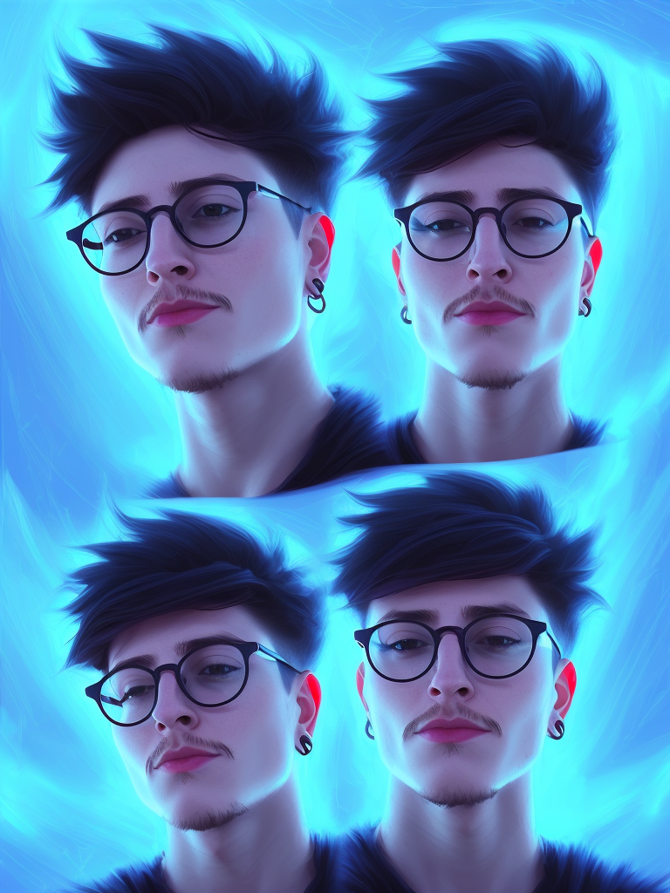

Portrait of Amser wearing Forerunner armor from Halo, high tech, action shot, angular, full body portrait, futuristic style
TUS VARIANTES DEL MULTIVERSO
CON STABLE DIFFUSION


Stable Diffusion es una Inteligencia Artificial Open Source generadora de imágenes a través de entradas de texto, conocidas como “Prompts”.
highly detailed portrait of Albert Einstein, unreal engine, fantasy art by greg rutkowski, loish, rhads, ferdinand knab, makoto shinkai and lois van baarle, ilya kuvshinov, rossdraws, tom bagshaw, global illumination, radiant light, detailed and intricate environment
Una de las cosas que podemos hacer con esta IA es entrenarla para que nos reconozca y generar un modelo con el cual podremos buscar infinítas versiones de nosotros mismos.
Amser, lightning, portrait, sharp focus, digital art, concept art, dynamic lighting, epic composition, colorful, trending on art

A mystical mesmerizing 8k hyperrealistic Photo Portrait of Amser as an astronaut transforming into a purple haze, soft, sharp forms, colorfully
Portrait of Amser,fractal, mandelbulb technique, intricate, elegant, super highly detailed, professional digital painting
Amser, lightning, portrait, sharp focus, digital art, concept art, dynamic lighting, epic composition, colorful, trending on art
Portrait painting of Amser in fantastic dress, medium shot, symmetrical face, face enhancement, fantasy art, highly detailed, 8 k, digital painting, smooth, concept art, sharp focus, illustration, golden ratio, cinematic, mythological, maximalist
very beautiful longshot photo of chthonic Amser, highly detailed, artstation, concept art, smooth, sharp focus, illustration, art by Ayami Kojima, Beksinski, Giger
highly detailed portrait of artaithamser in a nebula
formal portrait of Amser. digital art by eugene de blaas, ross tran, and nasreddine dinet, vibrant color scheme, intricately detailed, in the style of romanticism, cinematic, lighting background, artstation, greg rutkowski
Amser, lightning, portrait, sharp focus, digital art, concept art, dynamic lighting, epic composition, colorful, trending on art

highly detailed portrait of Amser wearing a beret and gold chains and brandishing a pistol, big eyes, realistic portrait, symmetrical, highly detailed, digital painting, artstation, concept art, smooth, sharp focus, illustration, cinematic lighting, art by artgerm and greg rutkowski and alphonse mucha

Amser, lightning, portrait, sharp focus, digital art, concept art, dynamic lighting, epic composition, colorful, trending on art